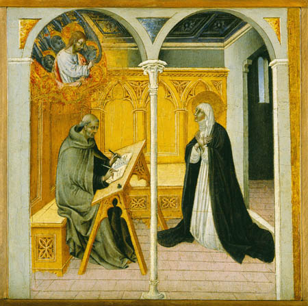

"Catherine Dictates to Raymond" Giovanni di Paolo [Public domain], via Wikimedia Commons
Raymond of Capua is most known for his appointment as Catherine of Siena’s spiritual advisor. He attended Bologna University and studied law, but he left the school to join the Dominican Order. His family was well connected to governments and the papal seat, as Thomas Luongo explains, “he was born into a socially prestigious family of jurists in the kingdom of Naples (tied politically to the papacy)...his father was a trusted advisor to King Robert of Naples,” and his brothers were closely related to several influential persons.1 Given the job of Catherine’s advisor in 1374, he gave Catherine a firm foothold into the wider Italian world of politics, both spiritual and sacred. Catherine and Raymond formed a strong bond together and confided in each other, especially because of his appointment as her confessor. Their trust provided a platform for Catherine to expand her vastly influential network of men and women throughout the Italian landscape. In 1377, Raymond left Catherine’s side and began persuing affairs concerning the papacy. He began to gain more power within the Urbanist party and thus in 1380 he became master general of the Roman Obedience.2
{kind=link}